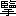

森先生の
渋江抽斎の伝を読んで、抽斎の一子
優善なるものがその友と
相謀って父の蔵書を持ち出し、酒色の資となす記事に及んだ時、わたしは自らわが過去を顧みて
慚悔の念に
堪えなかった。
天保の世に抽斎の子のなした所は、明治の末にわたしの為したところとよく似ていた。抽斎の子は
飛蝶と名乗り
寄席の高座に上って身振
声色をつかい、また大川に舟を浮べて影絵芝居を演じた。わたしは朝寝坊夢楽という落語家の弟子となり夢之助と名乗って
前座をつとめ、毎月師匠の
持席の変るごとに、引幕を
萌黄の
大風呂敷に包んで背負って歩いた。明治三十一、二年の頃のことなので、まだ電車はなかった。
当時のわたしを知っているものは
井上唖々子ばかりである。唖々子は今年六月のはじめ突然病に伏して、七月十一日の朝四十六歳を以て世を謝した。
二十年前わたしの唖々子における関係は、あたかも抽斎の子のその友某におけると同じであった。
六月下旬の或日、めずらしく晴れた梅雨の空には、風も凉しく吹き通っていたのを
幸、わたしは唖々子の病を東大久保
西向天神の傍なるその
 居
居に問うた。枕元に
有朋堂文庫本の『先哲叢談』が投げ出されてあった。唖々子は英語の外に
独逸語にも通じていたが、晩年には
専漢文の書にのみ親しみ、現時文壇の新作等には見向きだもせず、常にその言文一致の
陋なることを
憤っていた。
わたしは抽斎伝の興味を説き、伝中に現れ来る
蕩子のわれらがむかしに似ていることを語った。唖々子は既に
形容枯槁して一カ月前に見た時とは別人のようになっていたが、しかし談話はなお
平生と変りがなかったので、夏の
夕陽の枕元にさし込んで来る頃まで
倶に旧事を談じ合った。
内子はわれわれの談話の奇怪に
渉るのを知ってか後堂にかくれて姿を見せない。庭に飼ってある鶏が一羽
縁先から病室へ上って来て菓子鉢の中の菓子を
啄みかけたが、二人はそんな事にはかまわず話をつづけた。
わたしが昼間は外国語学校で支那語を学び、夜はないしょで寄席へ通う頃、唖々子は第一高等学校の第一部第二年生で、既に初の一カ年を校内の寄宿舎に送った後、
飯田町三丁目
黐の木
坂下向側の先考
如苞翁の家から毎日のように一番町なるわたしの家へ遊びに来た。ある晩、寄席が休みであったことから考えると、月の
晦日であったに相違ない。わたしは夕飯をすましてから唖々子を
訪おうと
九段の坂を
燈明台の下あたりまで降りて行くと、下から大きなものを背負って息を切らして上って来る一人の男がある。電車の通らない頃の九段坂は今よりも
嶮しく、暗かったが、片側の人家の灯で、大きなものを背負っている男の唖々子であることは、
頤の突出たのと肩の
聳えたのと、眼鏡をかけているのとで、すぐに見定められた。
「おい、君、何を背負っているんだ。」と声をかけると、唖々子は即座に口をきく事のできなかったほどうろたえた。
横町か路地でもあったら背負った物を置き捨てに逃げ出したかも知れない。
「君、引越しでもするのか。」
この声の誰であるかを聞きわけて、唖々子は初めて安心したらしく、砂利の上に荷物を下したが、
忽命令するような調子で、
「手伝いたまえ。ばかに重い。」
「何だ。」
「質屋だ。盗み出した。」
「そうか。えらい。」とわたしは手を
拍った。唖々子は高等学校に入ってから
夙くも強酒を誇っていたが、しかしわたしともう一人島田という旧友との勧める悪事にはなかなか加担しなかった。然るにその夜突然この快挙に出でたのを見て、わたしは覚えず称揚の声を禁じ得なかったのだ。
「何の本だ。」ときくと、
「『
通鑑』だ。」と唖々子は答えた。
「『通鑑』は『綱目』だろう。」
「そうさ。『綱目』でもやっとだ。『
資治通鑑』が一人でかつげると思うか。」
「たいして貸しそうもないぜ。『通鑑』も『
要』の方がいいのだろう。」
「これでも一晩位あそべるだろう。」
路傍にしゃがんで休みながらこんな話をした。その頃われわれが漢籍の種別とその価格とについて少しく知る所のあったのは、わたしと
倶に支那語を学んでいた島田のおかげである。ここに少しく彼について言わなければならない。島田、名は
翰、自ら元章と
字していた。世に知られた宿儒
篁村先生の次男で、われわれとは小学校からの友である。翰は一時神童といわれていた。われわれが漢文の教科書として『文章軌範』を読んでいた頃、翰は
夙に唐宋諸家の中でも殊に
王荊公の文を
諳じていたが、性質
驕悍にして校則を守らず、漢文の外他の学課は悉く棄てて
顧ないので、試業の度ごとに落第をした結果、遂に学校でも持てあまして卒業証書を授与した。
強面に中学校を出たのは翰とわたしだけであろう。わたしの事はここに言わない。翰は平生手紙をかくにも、むずかしい漢文を用いて、同輩を困らせては喜んでいたが、それは他日
大にわたしを
裨益する所となった。わたしは西洋文学の研究に
倦んだ折々、目を支那文学に移し、殊に清初詩家の随筆
書牘なぞを読もうとした時、さほどに苦しまずしてその意を解することを得たのは今は既に世になき翰の
賚であると言わねばならない。
唖々子が『通鑑綱目』を持出した頃、翰もまたその家から折々書物を持出した。しかし翰の持出したものは、唖々子の持出した『通鑑』や『
名所図会』、またわたしの持出した『群書類従』、『史記評林』、山陽の『外史』『政記』のたぐいとは異って、皆珍書であったそうである。先哲諸家の手写した抄本の中には容易に得がたいものもあったとやら。後に聞けば島田家では蔵書の紛失に心づいてから市中の
書肆へ手を廻し絶えず買戻しをしていたというはなしである。
森先生の渋江抽斎の伝に、その子優善が持出した蔵書の一部が後年島田篁村翁の書庫に収められていた事が記されてある。もし翰が持出した珍書の中にむかし
弘前医官渋江氏旧蔵のものが
交っていたなら、世の中の事は
都て廻り持であると言わなければならない。
明治四十一年わたしは海外より
還って再び島田を見た時、島田は既に『古文旧書考』四巻の著者として、支那日本両国の学界に重ぜられていた。
一日島田はかつて
爾汝の友であった唖々子とわたしとを新橋の一旗亭に招き、俳人にして集書家なる
洒竹大野氏をわれわれに紹介した。その時島田と大野氏とは北品川に住んでいる渋江氏が子孫の家には、なお珍書の存している事を語り、日を期してわたしにも同行を勧めた。されば渋江氏の蔵書家であった事だけを知ったのは、わたしの方が森先生よりも時を早くしていたわけである。唖々子は二子と共に同行を約したが、その時のわたしには新刊の洋書より外には見たいものはなかったので辞して行かなかった。後三年を経ずして、わたしが少しく古文書について知らん事を欲した時、古書に精通した島田はそのために身を誤り既にこの世にはいなかったのであった。
話は後へ戻る。その夜唖々子が
運出した『通鑑綱目』五十幾巻は、わたしも共に手伝って、
富士見町の大通から左へと一番町へ曲る角から二、三軒目に、篠田という
軒燈を出した質屋の店先へかつぎ込まれた。
わたしがこの質屋の顧客となった来歴は家へ出入する車屋の女房に頼んで
内所でその通帳を貸してもらったからで。それから唖々子と島田とがつづいて
暖簾をくぐるようになったのである。
もうそろそろ夜風の寒くなりかけた頃の
晦日であったが、日が暮れたばかりのせいか、格子戸内の
土間には客は一人もいず、鉄の棒で境をした畳の上には、いつも見馴れた三十前後の顔色のわるい病身らしい番頭が小僧に衣類をたたませていた。われわれは
一先土間へ下した書物の包をば、よいしょと覚えず声を掛けて畳の方へと
引摺り上げるまで番頭はだまって知らぬ顔をしている。引摺り上げる時風呂敷の間から、その
結目を解くにも及ばず、書物が五、六冊畳の上へくずれ出したので、わたしは
無造作に、
「君、拾円貸したまえ。」
番頭は例の如くわれわれをあくまで仕様のない坊ちゃんだというように、にやにや笑いながら、「駄目ですよ。いくらにもなりませんよ。」
「まあ、君、何冊あるか調べてから値をつけたまえ。」
「揃っていても駄目ですよ。全くのはなし、他のお客様ならお断りするんですが……。」
「一体いくらだよ。そんな意地の悪いことを言わないで。」
「そうですね。まア弐円がせいぜいという処でしょう。」
わたしと唖々子とは、最初拾円と大きく切出して置けば結局半分より安くなることはあるまいと思っていたので、暫く顔を見合せたまま何とも言う事ができなかった。殊に唖々子はこの夜この事を敢てするに至るまでの良心の苦痛と、途中人目を
憚りつつ背負って来たその労力とが、合せて
僅弐円にしかならないと聞いては、がっかりするのも無理はない。口に
啣えた巻煙草のパイレートに火をつけることも忘れていたが、
良久あって、
「おい。お願だからもうすこし貸してくれ。」
「この次、きっと入れ合せをするよ。」とわたしもともども歎願した。
しかし『通鑑綱目』は二人がそれから半時間あまりも口を揃えて番頭を攻めつけたにかかわらず、結局わずか五拾銭値上げをされたに過ぎなかった。
「これっぱかりじゃ、どうにもならない。」
「これじゃ新宿へ行っても駄目だ。」
質屋の店を出て、二人は嘆息しながら表通を
招魂社の鳥居の方へと歩いて行った。万源という料理屋の二階から酔客の放歌が聞える。二人は何というわけとも知らず、その方へと歩み寄ったが、その時わたしはふと気がついて唖々子の袖を引いた。万源の向側なる芸者家新道の
曲角に煙草屋がある。主人は近辺の差配で金も貸しているという。わたしの家をよく知っているから、五円や拾円貸さないことはあるまい。しかし何と言って借りたらいいものだろう。
すると唖々子は暫く黙考していたが、「友達が吉原から馬を引いて来た。友達がかわいそうだから、急場のところ、何とか都合をしてくれと頼んで見たまえ。」
「そうか。やって見よう。」とわたしは唖々子をその場に待たせて、まず冠っていた
鳥打帽を懐中にかくし、いかにも狼狽した風で、煙草屋の店先へ駈付けるが否や、
「今晩は。急に御願いがあるんですが。」
帽子をかくしたのは友達がわたしの家へ馬をつれて来たので、わたしは
家人の手前を憚り、取るものも取り敢ず救を求めに来た如く見せかけようとしたのである。
事は直に成った。二人は意気揚々として九段坂を下り車を北廓に飛した。
腕車と
肩輿と物は既に異っているが、昔も今も、放蕩の子のなすところに変りはない。蕩子のその醜行を蔽うに詩文の美を借来らん事を欲するのも古今また相同じである。揚州十年の
痴夢より一覚する時、
贏ち得るものは
青楼薄倖の名より他には何物もない。病床の談話はたまたま
樊川の詩を言うに及んでここに尽きた。
縁側から上って来た鶏は人の追わざるに再び庭に下りて
頻に友を呼んでいる。日暮の餌をあさる鶏には、菓子鉢の菓子は甘すぎたのであろう。
唖々子は既にこの世にいない。その俳句文章には
誦すべきものが
尠くない。子は別に不願醒客と号した。白氏の自ら酔吟先生といったのに
倣ったのであろうか。子の著『猿論語』、『
酒行脚』、『
裏店列伝』、『
烏牙庵漫筆』、皆酔中に筆を
駆ったものである。
わたしは子の遺稿を再読して世にこれを紹介する機会のあらんことを望んでいる。
大正十二年七月稿